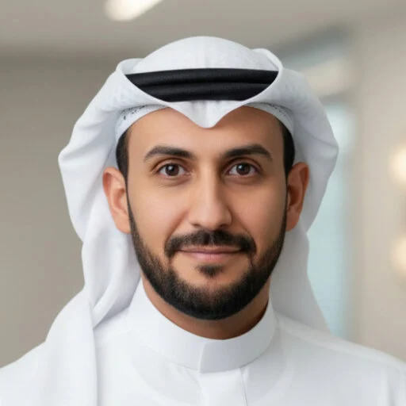

Strategic Leadership
Digital transformation at national scale — translating AI and data strategies into measurable programs, IT governance, ADKAR-based change management, and cross-sector stakeholder alignment.
I'm Prof. Mamdouh Alenezi — General Manager of the SDAIA Academy and Full Professor of Software Engineering. For over a decade I've turned strategy into systems: building national AI capability programs, modernizing technology governance, and publishing research that bridges academia and real-world delivery.

My career spans three arenas that rarely meet in one person: executive leadership of national-scale programs, deep technical practice in software engineering and AI, and a research record of 110+ peer-reviewed journal publications.
At SDAIA Academy, I lead Saudi Arabia's national capability development for data and AI — translating Vision 2030 and the Human Capability Development Program into training programs, bootcamps, and certifications with measurable workforce impact. Before that, at Tahakom, I directed the AI Academy and Technology Governance, modernizing enterprise architecture, institutionalizing PMO practices, and embedding CI/CD-enabled DevOps across delivery.
Earlier, across nearly a decade of deanships and the CIO role at Prince Sultan University, I led digital transformation, quality systems that earned ISO certifications and ABET accreditation, and curricula that produced new B.S. and M.S. programs in software engineering and cybersecurity.
Each capability reinforces the others — governance makes AI adoption responsible, engineering rigor makes strategy executable, and capability building makes it all sustainable.
Digital transformation at national scale — translating AI and data strategies into measurable programs, IT governance, ADKAR-based change management, and cross-sector stakeholder alignment.
Responsible AI frameworks, privacy and data protection, regulatory compliance, and governance audits that turn policy intent into operational controls.
DevOps and CI/CD modernization, secure development lifecycles, cloud and distributed architecture, and CMMI/ISO-aligned quality frameworks for enterprise delivery.
Curriculum and learning program design aligned to ABET/ACM, talent pipeline development, certification frameworks, and academia–industry partnerships that translate research into practice.
Enterprise architecture, PMO and portfolio management, KPI-driven performance measurement, and process improvement grounded in ISO and CMMI standards.
An active research agenda — software security, AI-driven engineering, digital transformation in higher education — deliberately pointed at problems institutions actually face.
Leading national capability development for data and AI: advanced training programs, bootcamps, and professional certifications aligned to Vision 2030 — with strategic partnerships across universities, research institutions, and industry.
National programsVision 2030Workforce readinessElevated enterprise architecture maturity, institutionalized a PMO playbook, revamped the SDLC with CMMI-aligned controls, and modernized delivery through CI/CD-enabled DevOps — while building sustained AI capability through enterprise training and academia–industry partnerships.
Enterprise architectureDevOpsAI capabilityEstablished a new college from the ground up — governance, curriculum, and faculty foundations for a strategic national sector.
Institution buildingBuilt the quality management systems that earned ISO certifications and institutional accreditation, and led the Teaching & Learning Center to raise faculty development campus-wide.
ISO certificationAccreditationRedesigned the student journey end-to-end and restructured the preparatory year program into an independent department.
Student experienceSet the university's technology vision, implemented enterprise ERP across finance, HR, and accounting, and established a continuous IT planning process serving the whole community.
ERPDigital transformationRedesigned courses to IEEE, ACM, and ABET standards and built employer feedback loops into the curriculum.
ABETCurriculum110+ journal articles and 27 conference papers spanning software security, AI-driven engineering, and digital transformation. A selection of the most cited and most recent:
My most-cited work — a widely referenced analysis of healthcare data breach trends and their security implications.
A roadmap for how universities must reinvent themselves as digital institutions.
Where AI is genuinely changing software engineering practice — and where it isn't yet.
A framework separating digitized teaching from true institutional digital maturity.
Quantifying how serverless architectures can shrink software's environmental footprint.
Closing the gap between architectural intent and what pipelines actually deploy.
h-index 37 · i10-index 98 · 8,000+ citations, with 90%+ earned in the last five years.
Full publication record →Thesis: "A New Coupling Metric: Combining Structural and Semantic Relationships."
Requirements engineering, software architecture, OO design patterns, testing & QA.
Software engineering, internet security & firewalls — where the journey began, and where I now serve as Full Professor.
Open to speaking engagements, advisory roles, research collaboration, and strategic partnerships in AI capability building and technology governance.